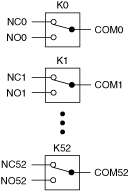
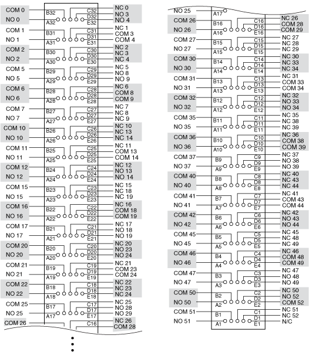

The following figure represents the NI PXI-2522 in the 53-SPDT topology.

You can control the channels using the niSwitch Connect Channels VI or the niSwitch_Connect function.
To connect the NO terminal to the COM terminal of that channel, disconnect the NC terminal from the COM of that channel.
For example, to connect NO2 to COM2, use the following code:
niSwitch_Disconnect(vi, "nc2", "com2")
niSwitch_Connect(vi, "no2", "com2")
|
Note To connect NO to COM you do not need to disconnect NC from COM after the module has been reset or a call to the niSwitch Disconnect All Channels VI or the niSwitch_DisconnectAll function has been made. |
|
Note niSwitch_Disconnect(vi, "nc2", "com2") does not activate the relay until niSwitch_Connect(vi, "no2", "com2") is executed. |
To connect the NC terminal to the COM terminal of that channel, disconnect the NO terminal from the COM of that channel.
For example, to connect NC2 to COM2, use the following code:
niSwitch_Disconnect(vi, "no2", "com2")
niSwitch_Connect(vi, "nc2", "com2")
When scanning the NI PXI-2522, a typical scan list entry could be nc2->com2;. This entry routes the signal connected to NC2 to COM2.
The following figure identifies the pins for the NI PXI-2522 in the 53-SPDT topology.
